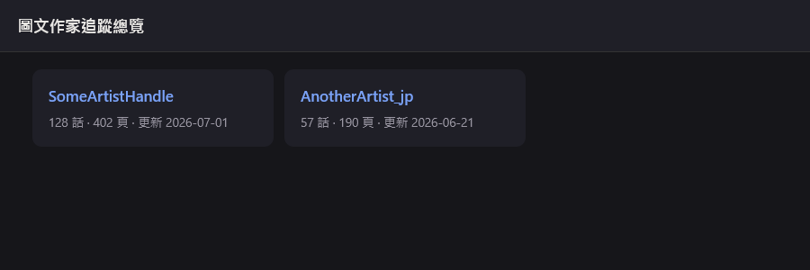
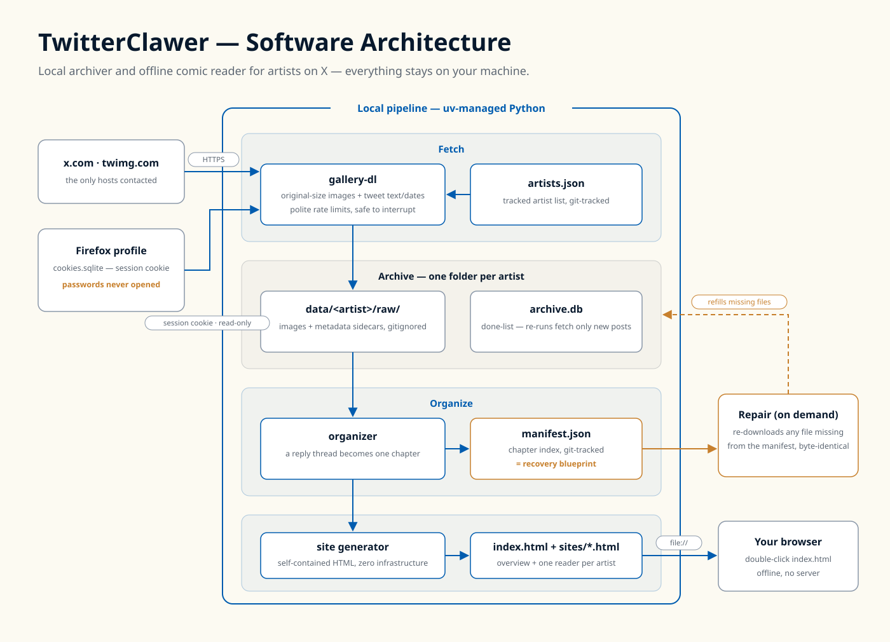

Read your favorite X artists like a real comic. 把追的 X 圖文作家，讀成一本真正的漫畫。
TwitterClawer archives every image an artist posts on X, rebuilds scattered posts into chapters, and serves them as an offline reader on your own machine. TwitterClawer 封存作家在 X 上發過的所有圖片，把散落的貼文重組成章節，在你自己的電腦上生成離線閱讀器。
Why this exists為什麼需要它
Comic series on X are scattered across hundreds of posts, in reverse order, buried in a timeline. This tool turns them back into books — readable offline, in order, and safe from deleted posts. X 上的連載散落在幾百則貼文裡、順序顛倒、埋在時間軸中。這個工具把它們變回一本書——離線、按順序閱讀，貼文被刪也不怕。
Is it safe?安全嗎？
The tool borrows the "already logged in" ticket — a session cookie — from your Firefox, the same thing your browser sends to x.com on every visit. It never reads your passwords: Firefox keeps those in separate encrypted files this tool does not open. It talks only to x.com and twimg.com.
工具只借用 Firefox 裡「已經登入」的憑證（session cookie）——跟瀏覽器每次開 x.com 送出的東西一模一樣。它絕不讀你的密碼：密碼存在另外的加密檔案裡，本工具完全不會開啟。連線對象只有 x.com 與 twimg.com。
What you need你需要什麼
Everyday use — four double-clicks日常使用——四個雙擊
| When you want to想要 | Double-click雙擊 |
|---|---|
| Follow a new artist — paste their profile URL 追蹤新作家——貼上作者頁網址 | add-artist.bat |
| First full download — long, safe to interrupt and re-run 第一次全量下載——會跑很久，中斷重跑會接著抓 | first-download.bat |
| Grab new posts after an artist updates 作家發新作後抓新貼文 | update.bat |
| Restore deleted or corrupted files 修復誤刪或損毀的檔案 | repair.bat |
Then open index.html: pick an artist, pick a chapter, scroll. Keys: ← older chapter, → newer chapter, Esc back to the list.
然後打開 index.html：點作家、選一話、往下捲。快捷鍵：← 上一話（較舊）、→ 下一話（較新）、Esc 回目錄。

How it works運作原理
Each artist gets a fully separate folder and reader page. The chapter index is version-controlled, so even if image files are lost, repair knows exactly what to re-download. 每位作家都有完全獨立的資料夾與閱讀頁。章節目錄有進版本控制，就算圖檔遺失，修復功能也確切知道該補回什麼。

Troubleshooting疑難排解
Download stops or errors mid-run下載中途停住或報錯
X sometimes rate-limits heavy fetching. The tool already goes slowly on purpose; just re-run the same file — finished downloads are never repeated. X 有時會限速。工具本來就刻意放慢；直接重跑同一個檔案即可——抓過的不會重抓。
"Login required" or empty results顯示需要登入或抓不到東西
Make sure Firefox is logged in to x.com. If your login lives in a non-default profile: uv run twitterclawer update --profile YOUR_PROFILE
確認 Firefox 已登入 x.com。若登入不在預設設定檔：uv run twitterclawer update --profile 設定檔名稱
X changed its site and downloads breakX 改版導致下載失效
Update the download engine, then re-run: uv lock --upgrade-package gallery-dl
升級下載引擎後重跑：uv lock --upgrade-package gallery-dl
Update just one artist只更新其中一位作家
uv run twitterclawer update --artist HANDLE
A note on copyright版權提醒
Everything you download belongs to the artists. This tool exists for personal offline reading — like saving pages for yourself. Do not republish the images or the generated pages, and support the artists you follow. 下載的內容版權屬於作家本人。本工具僅供個人離線閱讀——如同自己另存頁面。請勿轉載圖片或生成的頁面，並記得支持你追的作家。